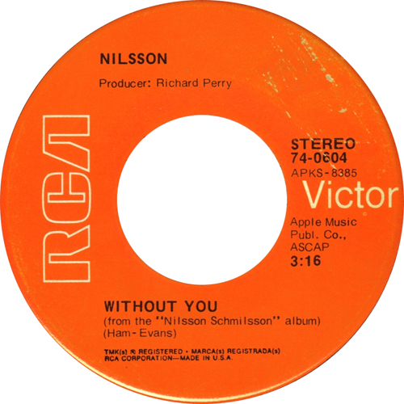
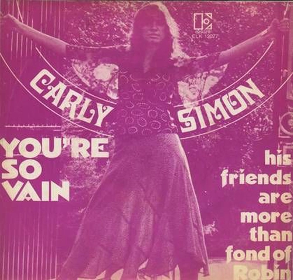
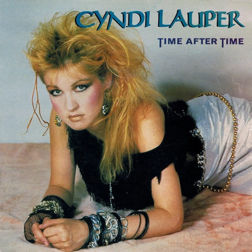
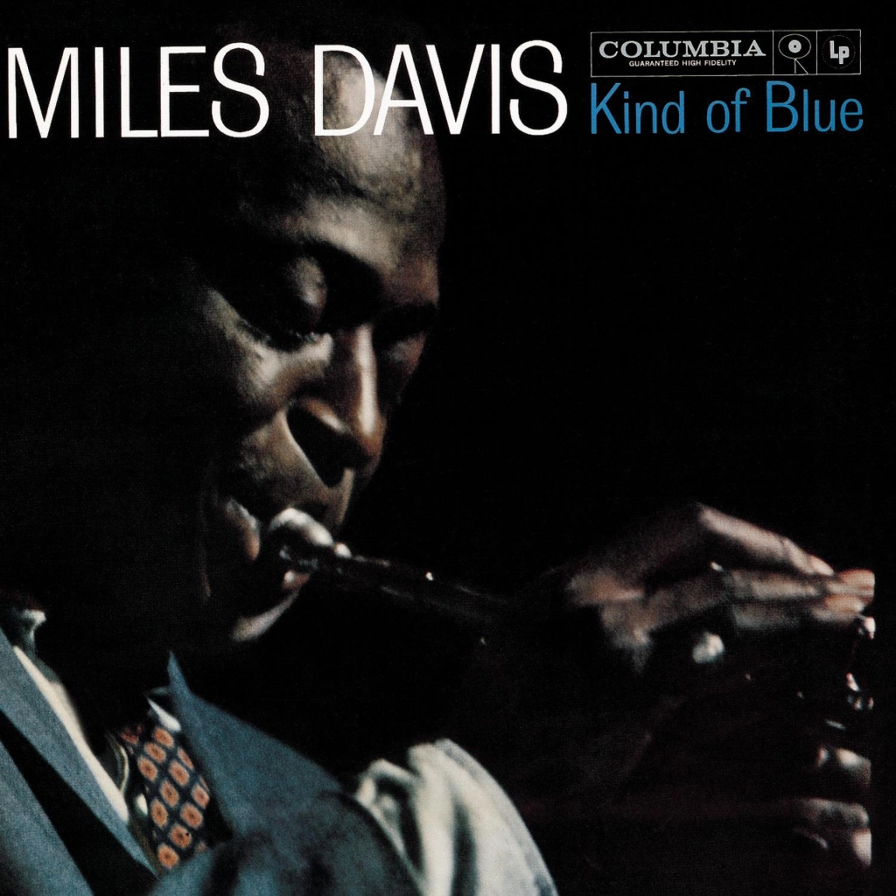

Chaleya (From "Jawan") Arijit Singh
05:34
Lizzo, ‘Truth Hurts’
03:34

Harry Nilsson, ‘Without You’
02:44

Carly Simon, ‘You’re So Vain’
02:10

Cyndi Lauper, ‘Time After Time’
03:12
The Pixies, ‘Where Is My Mind?’
04:01

Miles Davis, ‘So What’
05:30
Guns N’ Roses, ‘Welcome to the Jungle’
03:43